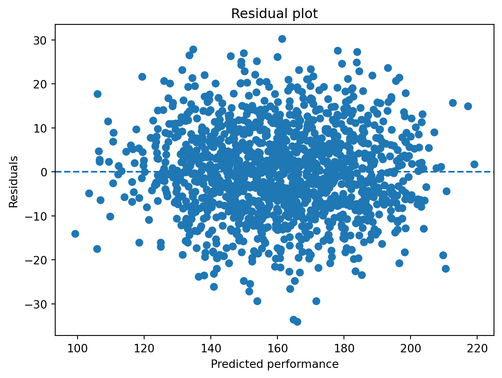

from sklearn.linear_model import LinearRegression# One-hot encode the department variabledf_model = pd.get_dummies(df, columns=["department"], drop_first=True)# drop_first effectively removes the HR department, setting it as the reference level# Define X (features) and y (target)# Note that we drop variables that should not be included in the modelX = df_model.drop(columns=["performance", "name", "employee_id", "role"])y = df_model["performance"]# Fit the linear regression modelmodel = LinearRegression()model.fit(X, y)# Create a coefficient tablecoef_df = pd.DataFrame({"variable": X.columns,"coefficient": model.coef_})# Print resultsprint(coef_df)print("Intercept:", model.intercept_)
Note: The HR department serves as the reference category.
Task A2: Interpret the coefficients
Which variables have a positive association with performance?
The variables with a positive association with performance are:
experience
training_hours
salary
team_size
manager_quality
department_IT
department_Sales
Their coefficients are all positive, which means that higher values of these variables are associated with higher predicted performance, holding the other variables constant.
Which variables have a negative association with performance?
The variable with a negative association with performance is:
remote_share
Its coefficient is negative (-0.936), which means that a higher share of remote work is associated with slightly lower predicted performance, holding the other variables constant.
How would you interpret the coefficient of remote_share?
The coefficient of remote_share is about -0.94. Because remote_share ranges from 0 to 1, this means:
moving from fully on-site (0) to fully remote (1) is associated with a decrease of about 0.94 points in predicted performance, holding the other variables constant.
A smaller change is often easier to interpret in practice. For example:
an increase of 0.10 in remote_share (10 percentage points more remote work) is associated with a decrease of about 0.094 performance points.
Is the remote_share effect large or small in practical terms?
The effect appears to be small in practical terms.
Even a very large change in remote work share—from fully on-site to fully remote—is associated with less than one point lower predicted performance (-0.94). For a more realistic change of 10 percentage points, the predicted difference is only about -0.094 points.
Compared with other coefficients, especially manager_quality (5.82) or the department coefficients (about 13 to 14), the remote_share effect is relatively small.
How should dummy variables such as department_IT or department_Sales be interpreted?
Dummy variables compare one category to the omitted reference category.
Here, department_IT and department_Sales show how those departments differ from the reference department, which is the department that was dropped during one-hot encoding. If drop_first=True was used and the departments are ordered alphabetically, the reference category is HR.
This means:
department_IT = 13.93 suggests that employees in IT have, on average, about 13.93 points higher predicted performance than employees in the reference department, holding all other variables constant.
department_Sales = 12.76 suggests that employees in Sales have, on average, about 12.76 points higher predicted performance than employees in the reference department, again holding other variables constant.
These coefficients do not compare IT directly with Sales. Each is compared to the reference department.
Part B — Regression tables with statsmodels
Task B1: Estimate the same model with statsmodels
import statsmodels.formula.api as smf# Fit the regression model using a formulamodel_sm = smf.ols( formula="performance ~ experience + training_hours + salary + remote_share + team_size + manager_quality + C(department)", data=df).fit()# Print the regression tableprint(model_sm.summary())
Compare coefficients Are the coefficient estimates (e.g., for remote_share) similar to those from scikit-learn?
Yes, the coefficients are the same (up to rounding). Both libraries estimate the same model on the same data, so we expect identical results.
Understanding statistical significance Which variables are statistically significant based on the p-values? How does this additional information change (or not change) your interpretation from Part A?
All variables except remote_share are statistically significant (p < 0.05).
This adds to Part A: although remote_share has a negative coefficient, it is not statistically reliable.
Interpreting remote_share more formally What do the p-value and confidence interval suggest about the reliability of the remote_share effect?
The p-value (0.449) is high and the confidence interval includes 0.
This suggests that the effect of remote_share is uncertain and not statistically significant.
Model fit and explanatory power What do R² and adjusted R² tell you about how well the model explains performance? Why should we be cautious when interpreting these values?
R² ≈ 0.82 means the model explains a large share of variation in performance.
However, a high R² does not guarantee that the model is correct or that effects are causal.
Comparing workflows: scikit-learn vs. statsmodels Reflect on how the model was specified in both parts:
How did you define variables and transformations in scikit-learn?
How does the formula interface in statsmodels simplify (or change) this process?
What are the advantages of using a formula like performance ~ remote_share + ...?
In scikit-learn, we manually prepared data (e.g., dummy variables, X/y).
In statsmodels, the formula (performance ~ ... + C(department)) simplifies this.
The formula approach is more readable and better suited for interpretation.
Part C — Regression diagnostics
Task C1: Residual plot
Create a simple residual plot for the fitted scikit-learn model from part A.
import matplotlib.pyplot as pltresiduals = y - model.predict(X)plt.scatter(model.predict(X), residuals)plt.axhline(0, linestyle="--")plt.xlabel("Predicted performance")plt.ylabel("Residuals")plt.title("Residual plot")plt.show()

Questions:
Do the residuals look roughly random?
Yes, the residuals appear to be randomly scattered around zero.
This suggests that the linear model is a reasonable approximation of the relationship in the data.
Do you see patterns that may indicate model problems?
No clear patterns are visible (e.g., no curvature or systematic structure).
This indicates that there are no obvious signs of model misspecification based on this plot.
What would a clear funnel shape suggest?
A funnel shape would suggest heteroscedasticity, meaning that the variance of the residuals changes with the predicted values.
This would violate a key regression assumption (constant variance) and could make standard errors and statistical tests unreliable.
Part D — Subgroup analysis: does one model fit all departments?
Task D1: Department-specific regressions
Estimate separate regressions for Sales, IT, and HR.
import statsmodels.api as smresults = {}for dept in df["department"].unique():# Subset data for one department df_sub = df[df["department"] == dept].copy()# Define X and y X_sub = df_sub[ ["experience", "training_hours", "salary", "remote_share", "team_size", "manager_quality"] ] y_sub = df_sub["performance"]# Add constant and fit OLS model X_sub = sm.add_constant(X_sub) model_sub = sm.OLS(y_sub, X_sub).fit()# Store result results[dept] = model_subprint(f"\n=== Regression results for {dept} ===")print(model_sub.summary())
=== Regression results for Sales ===
OLS Regression Results
==============================================================================
Dep. Variable: performance R-squared: 0.806
Model: OLS Adj. R-squared: 0.804
Method: Least Squares F-statistic: 392.3
Date: Wed, 15 Apr 2026 Prob (F-statistic): 5.90e-198
Time: 15:12:56 Log-Likelihood: -2099.4
No. Observations: 573 AIC: 4213.
Df Residuals: 566 BIC: 4243.
Df Model: 6
Covariance Type: nonrobust
===================================================================================
coef std err t P>|t| [0.025 0.975]
-----------------------------------------------------------------------------------
const 66.1880 3.317 19.956 0.000 59.674 72.702
experience 2.0658 0.165 12.540 0.000 1.742 2.389
training_hours 0.8965 0.040 22.636 0.000 0.819 0.974
salary 0.0003 7.61e-05 3.518 0.000 0.000 0.000
remote_share -2.9166 1.841 -1.584 0.114 -6.533 0.700
team_size 1.3468 0.112 12.048 0.000 1.127 1.566
manager_quality 4.9809 0.334 14.910 0.000 4.325 5.637
==============================================================================
Omnibus: 0.995 Durbin-Watson: 1.991
Prob(Omnibus): 0.608 Jarque-Bera (JB): 0.973
Skew: 0.101 Prob(JB): 0.615
Kurtosis: 2.986 Cond. No. 4.47e+05
==============================================================================
Notes:
[1] Standard Errors assume that the covariance matrix of the errors is correctly specified.
[2] The condition number is large, 4.47e+05. This might indicate that there are
strong multicollinearity or other numerical problems.
=== Regression results for HR ===
OLS Regression Results
==============================================================================
Dep. Variable: performance R-squared: 0.786
Model: OLS Adj. R-squared: 0.782
Method: Least Squares F-statistic: 173.0
Date: Wed, 15 Apr 2026 Prob (F-statistic): 1.88e-91
Time: 15:12:56 Log-Likelihood: -1072.5
No. Observations: 289 AIC: 2159.
Df Residuals: 282 BIC: 2185.
Df Model: 6
Covariance Type: nonrobust
===================================================================================
coef std err t P>|t| [0.025 0.975]
-----------------------------------------------------------------------------------
const 47.2129 5.419 8.712 0.000 36.545 57.880
experience 1.3588 0.272 4.997 0.000 0.824 1.894
training_hours 0.9066 0.066 13.811 0.000 0.777 1.036
salary 0.0006 0.000 4.519 0.000 0.000 0.001
remote_share -6.4131 2.890 -2.219 0.027 -12.101 -0.725
team_size 1.3288 0.173 7.665 0.000 0.988 1.670
manager_quality 4.7151 0.477 9.888 0.000 3.776 5.654
==============================================================================
Omnibus: 2.090 Durbin-Watson: 1.917
Prob(Omnibus): 0.352 Jarque-Bera (JB): 2.159
Skew: -0.179 Prob(JB): 0.340
Kurtosis: 2.774 Cond. No. 4.75e+05
==============================================================================
Notes:
[1] Standard Errors assume that the covariance matrix of the errors is correctly specified.
[2] The condition number is large, 4.75e+05. This might indicate that there are
strong multicollinearity or other numerical problems.
=== Regression results for IT ===
OLS Regression Results
==============================================================================
Dep. Variable: performance R-squared: 0.803
Model: OLS Adj. R-squared: 0.801
Method: Least Squares F-statistic: 361.3
Date: Wed, 15 Apr 2026 Prob (F-statistic): 8.13e-184
Time: 15:12:56 Log-Likelihood: -2010.0
No. Observations: 538 AIC: 4034.
Df Residuals: 531 BIC: 4064.
Df Model: 6
Covariance Type: nonrobust
===================================================================================
coef std err t P>|t| [0.025 0.975]
-----------------------------------------------------------------------------------
const 48.2260 4.059 11.880 0.000 40.252 56.200
experience 1.6694 0.195 8.568 0.000 1.287 2.052
training_hours 0.9113 0.044 20.596 0.000 0.824 0.998
salary 0.0005 9.14e-05 4.962 0.000 0.000 0.001
remote_share 4.0651 2.000 2.033 0.043 0.137 7.993
team_size 1.4581 0.130 11.198 0.000 1.202 1.714
manager_quality 7.4462 0.375 19.867 0.000 6.710 8.182
==============================================================================
Omnibus: 2.112 Durbin-Watson: 1.930
Prob(Omnibus): 0.348 Jarque-Bera (JB): 1.952
Skew: 0.091 Prob(JB): 0.377
Kurtosis: 3.232 Cond. No. 4.93e+05
==============================================================================
Notes:
[1] Standard Errors assume that the covariance matrix of the errors is correctly specified.
[2] The condition number is large, 4.93e+05. This might indicate that there are
strong multicollinearity or other numerical problems.
Task D2: Compare the subgroup models
Use the results to answer the following questions.
Do the coefficients differ across departments?
Yes, the coefficients differ across departments. While most variables (e.g., experience, training_hours, salary, team_size, manager_quality) are positively associated with performance in all departments, the magnitude of these effects varies.
For example, experience has a stronger effect in Sales than in HR, and manager_quality is much more influential in IT than in the other departments. In contrast, training_hours shows a very similar effect across all departments.
This indicates that the strength of relationships is not constant across departments.
Is remote_share associated with performance in the same way in every department?
No, the association differs across departments.
In Sales, remote_share has a negative but not statistically significant effect. In HR, it has a negative and statistically significant effect, suggesting that more remote work is associated with lower performance. In contrast, in IT, the effect is positive and statistically significant.
This shows that remote work impacts performance differently depending on the department.
Does manager_quality seem equally important in all departments?
No, although manager_quality is positively and significantly associated with performance in all departments, its importance varies.
The effect is strongest in IT, where the coefficient is substantially larger than in Sales and HR. This suggests that high-quality management may be particularly critical in IT compared to other departments.
What does this tell us about heterogeneity in company data?
The results indicate that the data are heterogeneous across departments. The same variables do not have identical effects everywhere, and some relationships (e.g., remote_share) even change direction.
This suggests that departments differ in their work structures, tasks, and coordination needs, leading to different performance drivers.
Why might a single model be too simplistic?
A single model assumes that the effects of all variables are the same across departments (apart from intercept differences when using dummies).
However, the subgroup results show that some effects vary in magnitude or even direction. A single model would therefore mask these differences and potentially lead to misleading conclusions.
Using subgroup models or interaction terms can better capture these variations.
NoteKey idea
If relationships differ strongly between groups, a single regression model can hide important structure.
Part E — Deployment
Saving and loading a model is useful in practice, but it is not the main conceptual focus of this notebook.
Here, it is included as an optional extension after you have already worked through model estimation, interpretation, diagnostics, and subgroup analysis.
Task E1 (optional): Save a fitted model
import joblib# Save the fitted sklearn modeljoblib.dump(model, "data/employee_performance_model.joblib")
['data/employee_performance_model.joblib']
Task E2 (optional): Load the model and predict a new case
import joblibimport pandas as pd# Load the saved modelloaded_model = joblib.load("data/employee_performance_model.joblib")# Create a new employee record (must match training data structure)new_employee = pd.DataFrame([ {"experience": 8,"training_hours": 45,"salary": 56000,"remote_share": 0.4,"team_size": 7,"manager_quality": 4,"department_IT": 1,"department_Sales": 0, }])# Generate predictionprediction = loaded_model.predict(new_employee)print(prediction)
[169.22919069]
Task E3: Reflect on practical and organizational considerations
Questions:
What practical challenges might arise when using this model to support decisions about employees?
The model may rely on incomplete or imperfect data (e.g., missing relevant factors like motivation or task complexity).
Input data for new predictions must be prepared in exactly the same way (same variables, same encoding).
The model may not generalize well if the company changes (e.g., new work practices or policies).
Interpretation requires care—managers may misread coefficients as causal effects.
What risks could emerge if the model is used without careful interpretation or oversight?
Decisions could be based on misleading relationships (e.g., interpreting correlation as causation).
The model could unintentionally disadvantage certain groups (e.g., departments or work styles).
Overreliance on the model could reduce human judgment and context-sensitive decision-making.
Employees may lose trust if decisions appear opaque or unfair.
What steps and safeguards would be important to ensure that the model is used fairly, transparently, and responsibly, taking into account legal and organizational requirements (e.g., employee representation, data protection)?
Ensure legal compliance from the outset, especially with data protection regulations (e.g., GDPR) and rules governing employee data and monitoring.
Involve employee representatives (e.g., works councils) early in the process, as the use of such models for employee-related decisions may require formal involvement and approval.
Define clearly how the model will be used (e.g., decision support vs. automated decisions) and ensure this aligns with legal and organizational guidelines.
Ensure transparency: document how the model works, what data is used, and how results should be interpreted.
Communicate openly with employees to maintain trust and clarify the purpose and limits of the model.
Check for potential bias or unfair effects across groups (e.g., departments) and address them if necessary.
Validate the model regularly and monitor whether it remains appropriate as conditions change.
Overall, responsible use requires aligning technical implementation with legal requirements, organizational processes, and ethical considerations.